Books & Chapters
著書
-
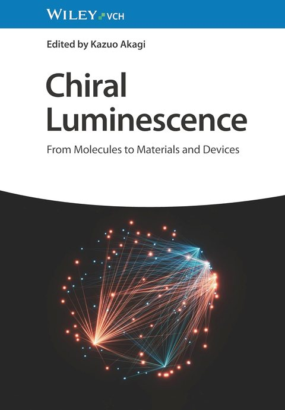
Recent Advancement of Circularly Polarized Luminescence of Helicenes
In Chiral Luminescence: From Molecules to Materials and Devices, Akagi, K. (Ed.). WILEY-VCH GmbH, 2024; pp 627–660.
Publisher page -
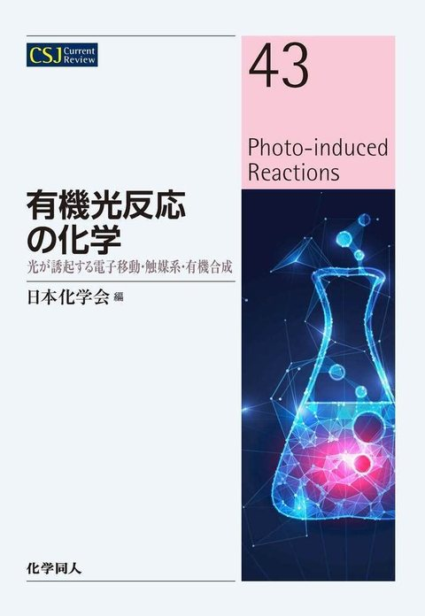
Chiral Organic Photochemistry
In Photo-Induced Reactions, The Chemical Society of Japan (Ed.). CSJ Current Review 43, Kagakudojin, 2022; pp 78–85.
Publisher page -
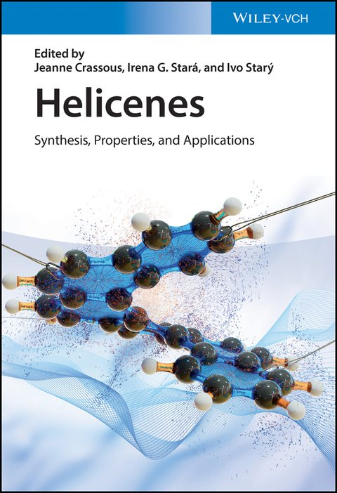
Chiroptical Properties of Helicenes: Historical Perspective and Structure–Property Relationships
In Helicenes: Synthesis, Properties, and Applications, Crassous, J.; Stará, I. G.; Starý, I. (Eds.). WILEY-VCH GmbH, 2022; pp 373–394.
Publisher page -
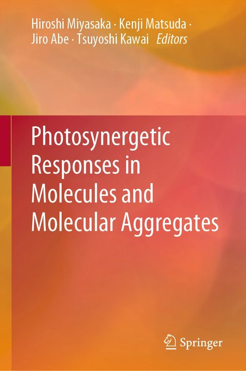
Synergetic Photon Upconversion Realized by a Controlled Toroidal Interaction in Hexaarylbenzene Derivatives
In Photosynergetic Responses in Molecules and Molecular Aggregates, Miyasaka, H.; Matsuda, K.; Abe, J.; Kawai, T. (Eds.). Springer, 2020; pp 287–300.
Publisher page -
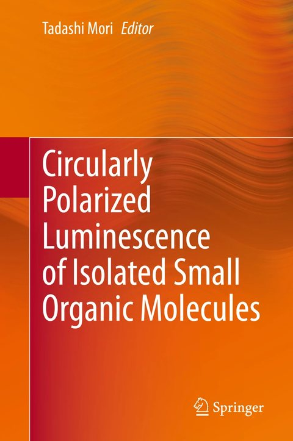
Circularly Polarized Luminescence of Isolated Small Organic Molecules
Springer, 2020.
Publisher page -
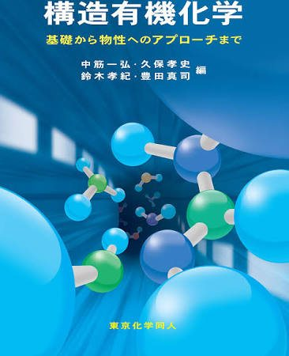
-
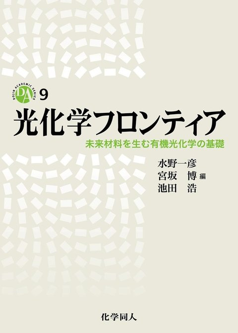
-
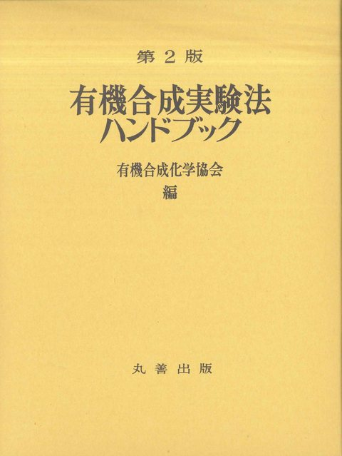
Synthesis of Olefins via Photoisomerization of Double Bond
「有機合成実験法ハンドブック 第2版」，有機合成化学協会 編．丸善出版，2015，pp 974–976．
Publisher page -
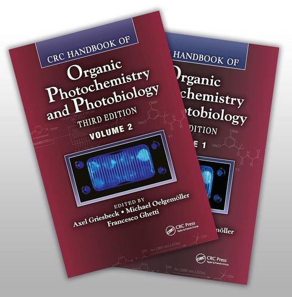
Photochemistry in Alternative Media
In CRC Handbook of Organic Photochemistry and Photobiology (3rd Ed.), Griesbeck, A.; Oelgemöller, M.; Ghetti, F. (Eds.). CRC Press, 2012; Vol. 1: pp 249–275.
Publisher page -
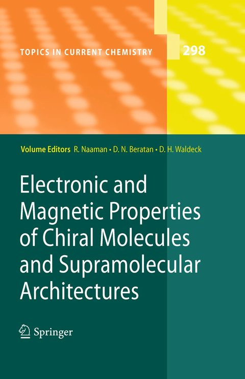
Recent Theoretical and Experimental Advances in the Electronic Circular Dichroisms of Planar Chiral Cyclophanes
In Electronic and Magnetic Properties of Chiral Molecules and Supramolecular Architectures, Naaman, R.; Beratan, D. N.; Waldeck, D. (Eds.). Springer, 2011; pp 99–128.
Publisher page -
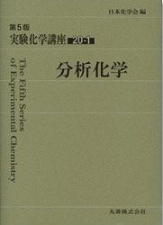
-
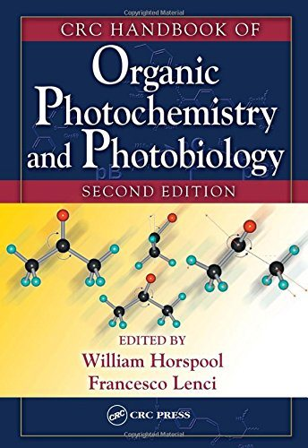
Photochemical Isomerization of Cycloalkenes
In CRC Handbook of Organic Photochemistry and Photobiology (2nd Ed.), Horspool, W. M.; Lenci, F. (Eds.). CRC Press, 2004; pp 16/11–16/26.
Publisher page